Con chi lavoriamo
Attualmente, abbiamo il privilegio di collaborare con le seguenti Cantine, ricoprendo queste posizioni:
[Puglia] Export Area Manager Asia-Pacific [2015]
[Sicilia] Consulenza Mercati Asia-Pacific,Direttamente Responsabile per il mercato Giapponese. [2021]
[Sardegna] Export Area Manager & Brand Ambassador Giappone [2022]
Consulenza e Apertura mercati Asiatici [2023]
[Liguria] Consulenza Apertura mercati Asiatici [2023]
[Sardegna] Export Area Manager Asia-Pacific [2023]
 [Toscana] Brand Ambassador - Reginal Sales Manager
[Toscana] Brand Ambassador - Reginal Sales Manager
[Toscana] Brand Ambassador - Reginal Sales Manager